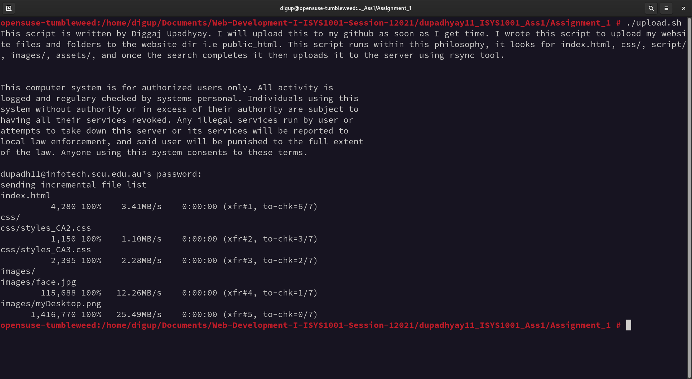

About Me?
I am a Linux Enthusiast. I love playing around with Operating Systems. Most of the time I am lurking around Linux Distributions seeing what they offer and what built-in tools are available, how upgrade/downgrade system works, how package management system works, what is containerized system, etc. I have about 30 different OS running on virtual machine who follows their own philosophy of handling system. I have also created my own first raspPI os based on debian but, it's very out dated and I don't have much time to invest on that project since it doesn't pay me. (If someone who is interested can download and use it from rasPI OS)
Uploading files to infotech using command line
I personally use script to do these kind of work but, to make things clear I will share a simple instruction on how to upload your website directory(folder) i.e Assignment_1/ to the remote directory where your public_html/ may be hosted.
Follow the Instructions if you can open a bash/zsh shell. Then, type in the commands but, be careful to change the variables and paths as it is not the same
$ rsync -azvP index.html about.html contact.html readme.txt css images \ yourusername@infotech.scu.edu.au:public_html/
Note: Replace the name of files you want to transfer and your username.
if everything is correct it should ask you for the password and enter your given password.
And, that was it! Your files and folders have been uploaded to the website in a matter of minute without even dealing with ftp clients like Filezilla.
Contact Me
Email me at: Diggaj Upadhyay
Written by Diggaj Upadhyayhttps://diggajupadhyay.com
Westralia